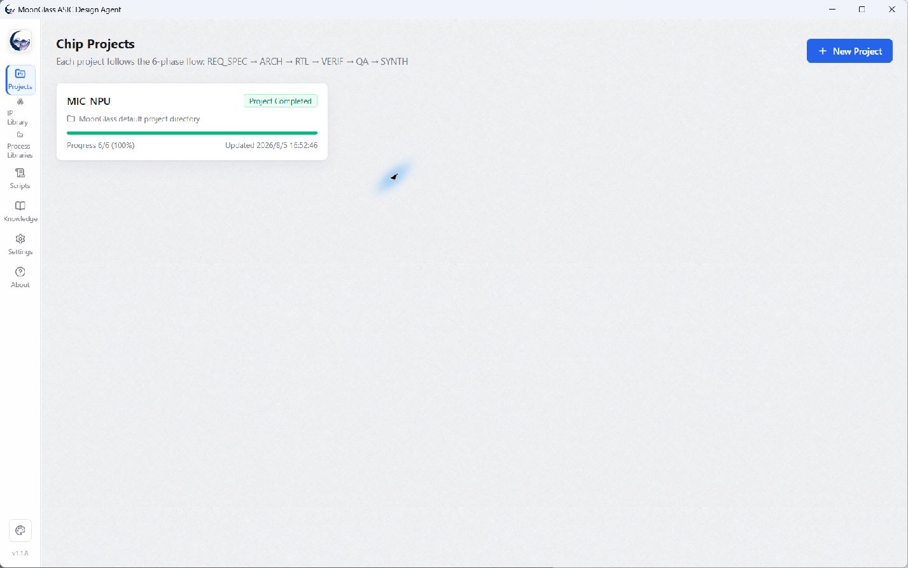
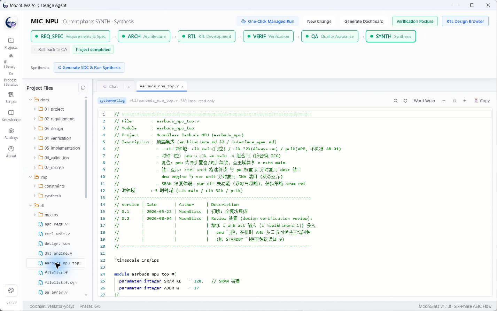

MoonGlass ASIC Design Agent
An AI-assisted engineering workbench for ASIC/SoC development.
v1.2.1 · Windows x64 · Portable ZIP
From requirements to evidence
Requirements/specification → architecture → RTL → verification → quality assurance → synthesis. Inspect agent work, project files, stage gates, and verification evidence in one desktop workspace. Engineers retain responsibility for review, risk acceptance, and sign-off.


Run the portable application
- Download the Windows x64 ZIP and checksum file from GitHub Releases.
- Extract the entire archive into a writable directory. Run
MoonGlass.exeorStart-MoonGlass.bat. No installer is provided. - Choose English in Settings, configure your model provider and API key, and check the EDA environment.
- Open the MIC_NPU demo, create a project, or import your workspace. Review outputs and evidence before advancing stages.
Portable data lives in userdata alongside the executable. The release does not include user API credentials or agent conversations.
Source and licensing
The public repository contains UI, shared contracts, workflow framework, and documentation—not the complete product build. It has no package.json; use the portable ZIP to run MoonGlass.
MoonGlass is Source Available, not OSI-approved open source. Noncommercial use follows the PolyForm Noncommercial License. Commercial use requires separate written authorization.